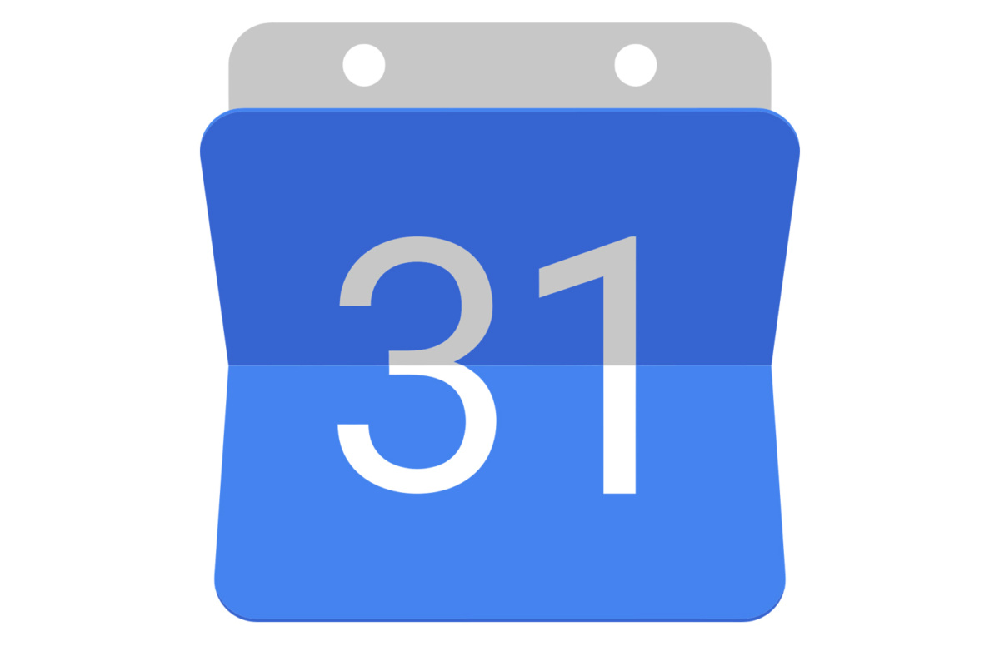
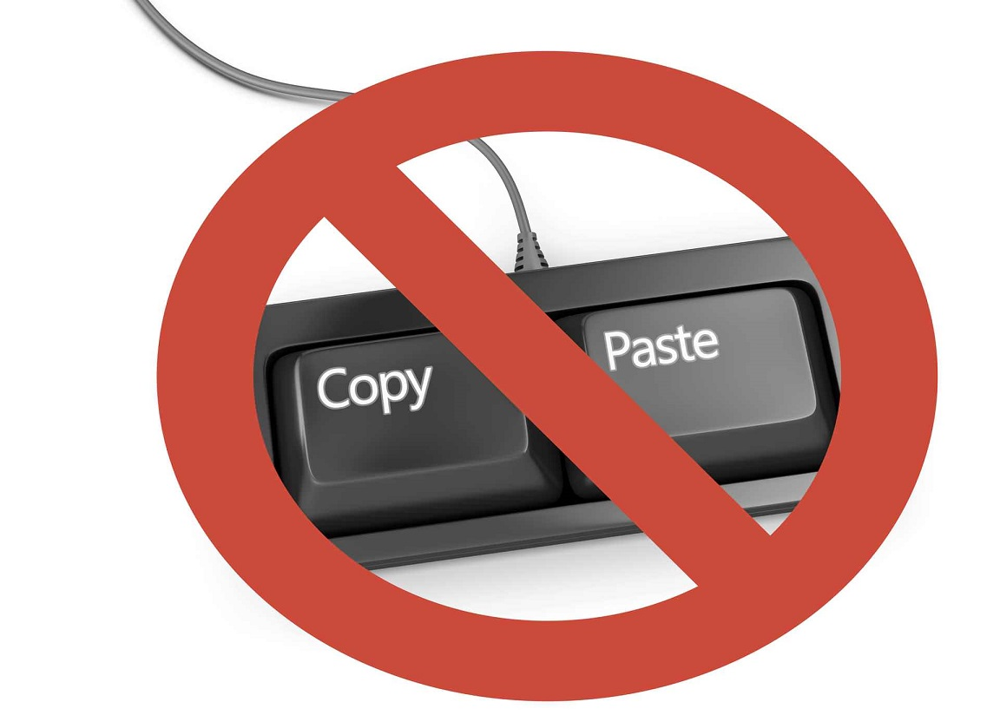
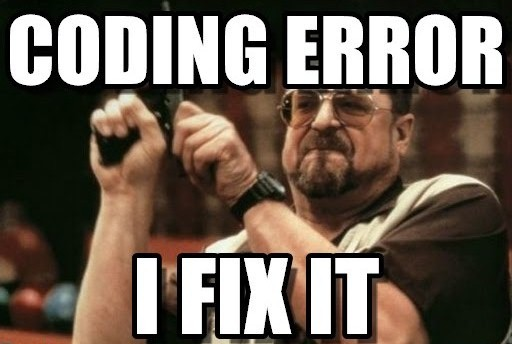

7 Tips Cepat Belajar Programming

Kegiatan belajar pemrograman dapat dikatakan mudah, jika dilakukan dengan serius dan ditekuni secara mendalam. Banyak yang bertanya apakah belajar pemrograman dapat dilakukan dengan otodidak? Jawabannya bisa. Belajar pemrograman secara otodidak menjadi pilihan untuk beberapa developer.
Belajar pemrograman secara otodidak pada zaman sekarang semakin mudah dilakukan. Karena, terdapat banyak sumber media belajar pemrogramanyang dapat diakses. Informasi yang didapat pun dapat lebih cepat dan lebih mudah diterima.
Berikut 7 tips cepat untuk belajar programming
1. Tentukan Bahasa Pemrograman Yang Akan Dipelajari

Bahasa pemrograman yang sedang berkembang akhir-akhir ini sangatlah banyak. Tetapi, tidak semua bahasa pemrograman harus dipelajari secara bersamaan. Agar dapat mempelajarinya dengan mudah, maka Anda harus menentukan Bahasa pemrograman apa yang akan dipelajari terlebih dahulu.
Sesuaikan bahasa pemrograman yang akan dipelajari dengan kemampuan yang kita miliki. Dengan begitu, Anda dapat lebih mudah untuk belajar pemrograman dan mengerti apa yang dipelajari. Jika Anda baru saja memulai untuk belajar pemrograman, mungkin dapat dilakukan dengan html dan jika Anda sudah menguasai bidang tersebut lanjutkan ke tahap berikutnya. Jadi, lakukan dengan bahasa pemrograman yang paling mudah dipelajari.
Jika sudah menguasai satu bahasa pemrograman, tingkatkanlah kemampuan Anda dengan cara mempelajari bahasa pemrograman yang lebih sulit tingkatannya. Dengan begitu, kemampuan Anda untuk belajar pemrograman meningkat.
2. Perbanyak Praktek

Belajar pemrograman atau coding harus dilakukan dengan praktek.
Dengan praktek kita akan dapat pengelaman. sedangkan membaca dan memahami teori, kita hanya dapat ilmunya.
Oleh karena itu, perbanyaklah praktek.
Apa yang hahrus dipraktekin?
Dalam pemrograman, kita cukup menulis dan membaca saja. Tulis kodemu sendiri dan belajarlah cara membaca kode orang lain.
3. Gunakan Modul atau Tutorial yang Lengkap
Jika kamu belajar otodidak dari internet, pastikan tutorialnya lengkap.
Modul yang lengkap biasanya terstruktur dari bab ke bab.
Kenapa harus lengkap dan terstruktur? Karena agar kita bisa melakukan tips selanjutnya.
Jika kamu ingin belajar Web Programming. Saya rekomendasikan belajar di Web Programming Unpas karena disitu tutorialnya lengkap dan cara menyampaikannya juga bagus.
Selain belajar dari internet, ada baiknya juga belajar dari buku-buku pemrograman.
4. Buat Jadwal Belajar

Dengan menentukan jadwal belajar, tentu akan membuat anda melakukannya secara rutin dan lama-kelamaan akan menjadi kebiasaan.
Sediakan waktu setidaknya 1-2 jam untuk belajar pemrograman. Jangan lakukan hal lain, cukup fokus untuk belajar pemrograman.
Dengan begitu, Anda dapat lebih cepat mengerti dan lebih mudah untuk menyerap materi yang sedang dipelajari.
5. Jangan Copy Paste

Dalam belajar pemrograman, hal yang tidak boleh dilakukan adalah Copy-Paste dalam pembelajaran. Jangan selalu terpaku pada modul atau tutorial yang ada.
Cukup kembangkan idemu dalam belajar. Jadi otak akan lebih mudah untuk menyerapnya dan daya kreativitas pun akan semakin meningkat.
Dampak yang timbul dari Copy-Paste pada saat belajar, kemampuan Anda hanya akan terpaku seperti tutorial dan Anda tidak dapat mengembangkan kreativitas Anda pada membuat program. Pengetahuan Anda pun akan terbatas karena Anda hanya mengikuti tutorial yang ada.
6. Perbaiki Error Sendiri

Setiap kali ngoding pasti kamu akan menemukan error. Entah itu error yang serius ataupun error yang biasa saja misal lupa mengasih ‘;’ pada setiap akhir kode pada bahasa pemrograman Java. Hal remeh seperti itu saja sudah menyebabkan program kita error dan tidak bisa dijalankan.
Jadi cobalah untuk memperbaiki error yang kamu temukan pada saat membuat program. Cukup mencari cara atau teliti kembali dalam membuat suatu program maka kamu akan dapat menemukan kesalahan dari progam.
Tetapi, jangan terlalu dipaksakan. Jika kamu sudah benar-benar merasa kebingungan, coba saja googling tentang error tersebut, saya yakin pasti kamu akan menemukan solusinya.
Sekian...
Untuk saat ini, itulah beberapa tips yang bisa saya berikan. Mungkin akan ada tambahan ke depannya.
Terimakasih sudah membaca, semoga bisa membantu kalian semua yang ingin mulai belajar pemrograman.